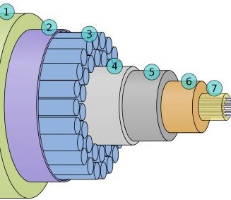
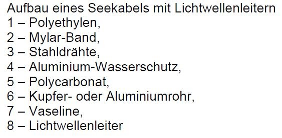
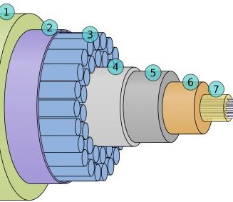
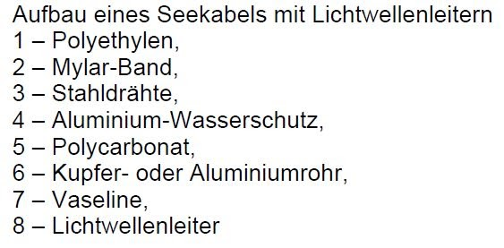
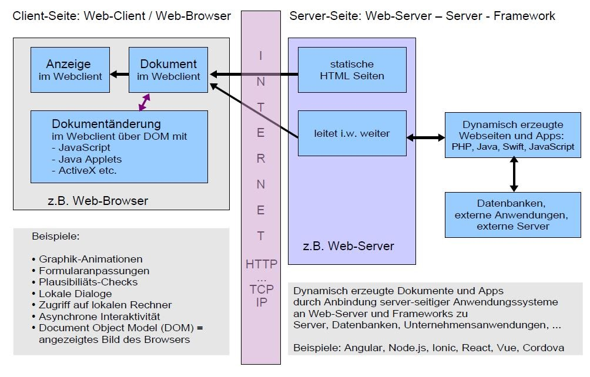
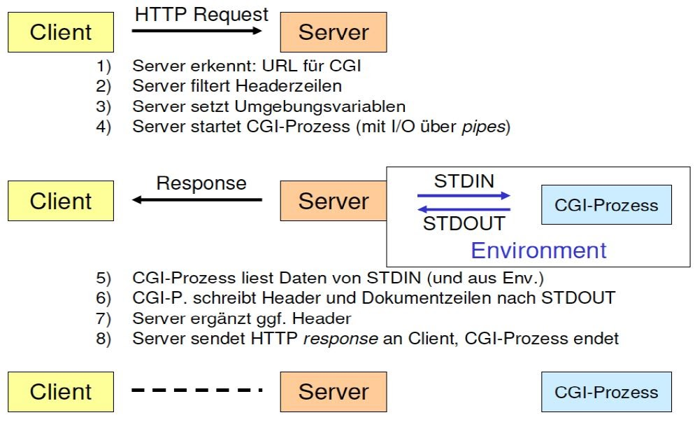
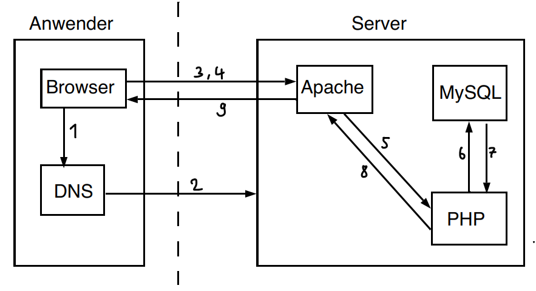
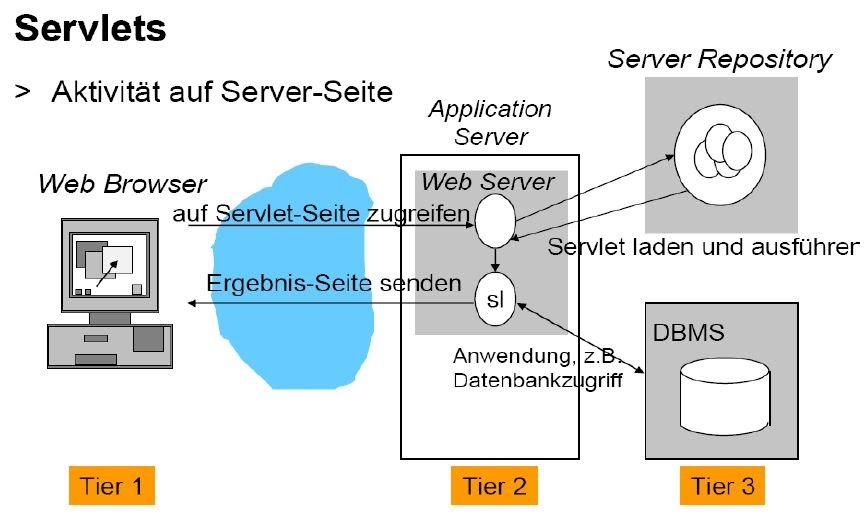
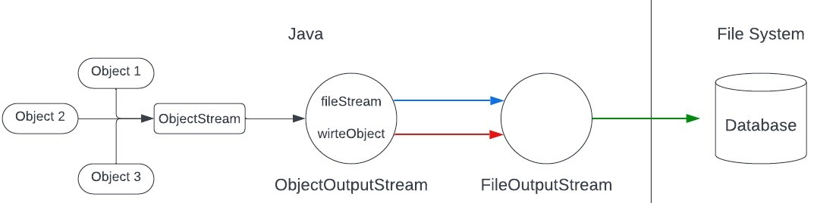

Vorlesung 1
Einführung
Zu Beginn der Vorlesung haben wir uns mit grundlegenden Netzwerkthemen beschäftigt. Wir haben uns einige wichtige technische Meilensteine in der Vergangenheit angesehen. Zunächst war das Internet nur intern über ein P2P-Netzwerk verfügbar, aus dem sich dann das heutige Internet entwickelte. Fun Fact: Das heutige Datenbanksymbol stellt einen Stapel von Speicherplatten dar.

Bridges und Switches
Heutzutage verfügt jedes Netzwerk über mehrere Switches, um Geräte mit einem LAN zu verbinden. Der Vorgänger dieser Switches ist die Bridge, die den Datenfluss filtert und sich MAC-Adressen in einer Weiterleitungstabelle merkt. Die heutigen Switches erweitern das Prinzip der Bridge und führen Aspekte wie die Weiterleitung ein. Switches arbeiten kollisionsfrei, da sie nur ein Gerät pro Domäne schalten, wodurch ein hoher Durchsatz möglich ist. Switches speichern Pakete und leiten sie weiter, sobald die Domäne frei ist.
Tiefseekabel
Der letzte Teil der Einführung war ein Exkurs zum Thema Unterwasserkabel. Weltweit gibt es rund 1,2 Millionen km Tiefseekabel allein für die Übertragung von Daten. Anfang 2020 waren rund 406 Unterseekabel aktiv, und es werden ständig weitere verlegt.
 



Ein Tiefseekabel hat im Kern mehrere Glasfasern, die für den Datentransport zuständig sind. Um die Glasfaser herum sind mehrere Schichten angeordnet, um sie zu schützen. Da das Licht bei wiederholten Reflexionen seine ursprüngliche Energie nicht beibehalten kann, müssen zusätzlich zu den Kabeln alle 30 km Verstärker verlegt werden. Für eine Strecke von Europa in die USA sind das eine Menge Kabel, die gewartet werden müssen.
Software Architektur von dynamischen Webseiten
Letztes Semester haben wir uns mit clientseitigen Technologien beschäftigt, dieses Semester werden wir uns mehr mit serverseitigen Technologien beschäftigen. Zur Erinnerung, hier ist die grobe Architektur eines Webservers: Client-seitige Technologien sind z.B. JavaScrpit und seine Frameworks, Java-Applets und native Apps. Diese werden dann z.B. in Swift oder C programmiert. Android-Geräte verwenden JAVA als Sprache für ihre Apps. Die meisten Web-Apps generieren ihren Java-Code aus serverseitigen Skripten, die wiederum hybride Technologien darstellen. Java-Applets sind eine solche Hybridtechnologie. Diese führen Java-Code auf dem Client-Endgerät aus. Applets werden kaum noch verwendet, da sie einige Sicherheitsprobleme haben. Ein Problem ist, dass man nicht erkennen kann, woher der Code kommt, und es gibt keinen Zugriff auf Dateien.
Im Gegensatz zu clientseitigen Technologien sind serverseitige Technologien für den Benutzer der Webanwendung nicht direkt sichtbar. Das Grundprinzip ist die Delegation/Weiterleitung von HTTP-Anfragen an externe Komponenten. Auf der Serverseite wird mit großer Mehrheit PHP verwendet, gefolgt von Java, Ruby für die Programmierung z.B. von Webshops. Ein Einstieg in serverseitige Technologien war CGI. Das Common Gateway Interface (CGI) leitete die Entwicklung hin zu dynamischen Webseiten ein, indem es bestimmte URLs vom Webserver als Aufforderung zum Programmstart interpretierte. So werden Prozesse auf einem Server durch Eingabe der URL ausgeführt. Dies ist auch ein Hauptproblem von CGI. Durch wiederholte Aufrufe der URL werden auch wiederholt Prozesse auf dem Server gestartet. So kam es zu DDOS-Angriffen (Distributed Denial of Service).
Eine weitere Technologie, die ebenfalls dynamische Websites ermöglicht, ist PHP. PHP ist ein Akronym für Hypertext Preprocessor und ist eine serverseitige Skriptsprache. PHP ist die am weitesten verbreitete serverseitige Skriptsprache der Welt. Ein großer Vorteil von PHP ist, dass es quelloffen ist und daher ständig weiterentwickelt wird und mit den modernen Trends Schritt hält. Um richtig zu verstehen, wie eine serverseitige Sprache wie PHP funktioniert, ist hier der Ablauf:
- Eingabe einer URL im Browser
- Verbindungsaufbau mit Server
- Browser sagt was er will
- Apache auf dem Server bearbeitet die Anfrage des Anwenders
- Apache ruft eine PHP Datei auf
- Das PHP Skript zieht sich Daten aus der MySQL Datenbank
- MySQL schickt die Daten ans PHP Skript
- Interpretiertes PHP Skript wird zurück an Apache gesendet
- Apache schickt dem Anwender das Ergebnis der Interpretation meistens: HTML JavaScript oder CSS
- Die gewünschte Webseite taucht auf!
PHP kann genau wie Java-Skript in eine HTML-Datei integriert werden. Hier ist die Startmarkierung < php und die Endmarkierung >. Wie Java ist auch PHP eine objektorientierte Sprache und hat eine ähnliche Syntax wie Java. Im Gegensatz zu den Java-Applets werden Server-Applets auch heute noch verwendet und basieren weitgehend auf Java. Java wird, wie bereits erwähnt, häufig für die Programmierung komplexer Webseiten verwendet. Konzepte wie Vererbung, Klassen und Schnittstellen sind in Java integriert, was es sehr vielseitig macht. Im Gegensatz zu Java Script verfügt Java nicht über einen Just-in-Time-Compiler, sondern kompiliert den gesamten Code, bevor er ausgeführt wird.
Java Streams
Bei der Entwicklung von Computerspielen ist es unerlässlich, den Spielstand auf irgendeine Weise speichern zu können, da er sonst vollständig verloren geht. Da jedoch beim Beenden eines Java-Programms alle Variablen, Objekte usw. aus dem Heap gelöscht werden, haben Sie keine andere Wahl, als wieder von vorne anzufangen. An dieser Stelle kommt das Prinzip der Serialisierung in Java ins Spiel. Serialisierung ist die Umwandlung von Objekten in Java in einen Bytestrom. Dadurch kann das Objekt vom Heap in eine Datei geschrieben und diese Datei gespeichert werden. Bei der Serialisierung in Java verwendet Java Byte-Streams, daher der Name Java-Streams. Es gibt eine Vielzahl von Streams in Java, die für die Serialisierung verwendet werden. Im Grunde ist dies die Zusammenarbeit der Streams:
Die Datei, die eine solche Serialisierung ausgibt, ist eine .ser-Datei. Wie Sie sehen, können Sie nicht sehr gut erkennen, was in der Datei steht. Zu diesem Zweck werden die .ser-Dateien in XML- oder JSON-Dateien umgewandelt, die dann sehr gut lesbar sind und alle Attribute eines Objekts auswerten können. Möchte man nun einen Spielstand wiederherstellen, kann Java mit der serialisierten Datei kaum etwas anfangen, daher können Objekte mit Streams wieder deserialisiert werden. In diesem Fall werden Input-Streams anstelle von Output-Streams verwendet. Die Vorgehensweise ist die gleiche wie bei der Serialisierung, nur in umgekehrter Reihenfolge. Um diese Konzepte zu vertiefen, haben wir die erste Übung bearbeitet.
SpielSpeicherung-Übung
Das gerade angesprochene Phänomen sollte jetzt in der Praxis getestet werden.
Die Klasse SpielSpeicherungTest beinhaltet die Serialisierung und die Deserialisierung. Hier werden außerdem die Spielfiguren initialisiert und das Team erstellt. Hier der Code:
import java.io.*;
public class SpielSpeicherungTest {
public static void main(String[] args) {
Spielfigur eins = new Spielfigur(50, "Elb", new String[] {"Bogen", "Schwert", "Staub"});
Spielfigur zwei = new Spielfigur(40, "Troll", new String[] {"bloße Hände", "Axt"});
Spielfigur drei = new Spielfigur(150, "gute Fee", new String[] {"Zaubersprüche", "Flügel"});
Team IMBIT = new Team("IMBIT", new Spielfigur[]{eins, zwei, drei});
try {
ObjectOutputStream os = new ObjectOutputStream(new FileOutputStream("Spiel.ser"));
os.writeObject(IMBIT);
os.close();
} catch (IOException ex) {
ex.printStackTrace();
}
IMBIT = null;
eins = null;
zwei = null;
drei = null;
try {
ObjectInputStream is = new ObjectInputStream(new FileInputStream("Spiel.ser"));
Team Wiederhergestellt = (Team) is.readObject();
is.close();
System.out.println("Teamname: " + Wiederhergestellt.getTeamname());
System.out.println("Mitglieder: \n" + Wiederhergestellt.getMitglieder());
}catch(Exception ex) {
ex.printStackTrace();
}
}
}
Die Klasse Spielfigur beinhaltet den Konstruktor für das Objekt Spielfigur und einige Getter zur Ausgabe der Attribute:
import java.io.*;
public class Spielfigur implements Serializable {
int staerke;
String typ;
String[] waffen;
public Spielfigur(int staerke, String typ, String[] waffen) {
this.staerke = staerke;
this.typ = typ;
this.waffen = waffen;
}
public int getStaerke() {
return staerke;
}
public String getTyp() {
return typ;
}
public String getWaffen() {
String waffenListe = "";
for (int i = 0; i < waffen.length; i++) {
waffenListe += waffen[i] + ", ";
}
return waffenListe;
}
}
Die Klasse Team beinhaltet den Konstruktor eines Teams und einiger Getter zur Ausgabe von Attributen:
import java.io.*;
public class Team implements Serializable{
Spielfigur[] mitglieder;
String teamname;
public Team(String teamname, Spielfigur[] mitglieder) {
this.teamname = teamname;
this.mitglieder = mitglieder;
}
public String getMitglieder() {
String mitgliederListe = "";
for (int i = 0; i < mitglieder.length; i++) {
mitgliederListe += (i+1) + ": ";
mitgliederListe += "Typ: " + mitglieder[i].getTyp() + ", ";
mitgliederListe += "Stärke: " + mitglieder[i].getStaerke() + ", ";
mitgliederListe += "Waffen: " + mitglieder[i].getWaffen() + " \n";
}
return mitgliederListe;
}
public String getTeamname() {
return teamname;
}
}